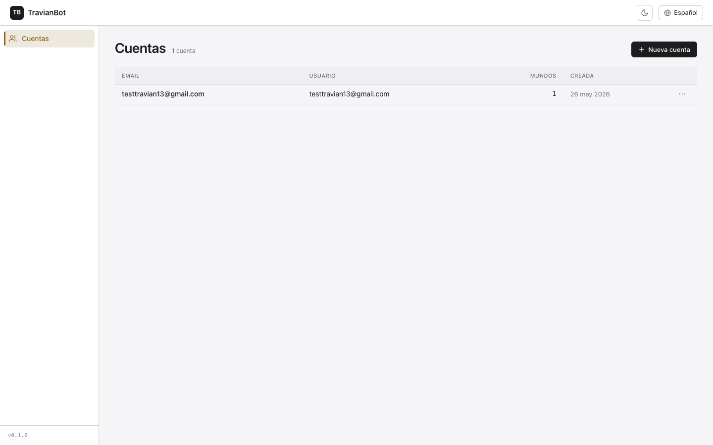
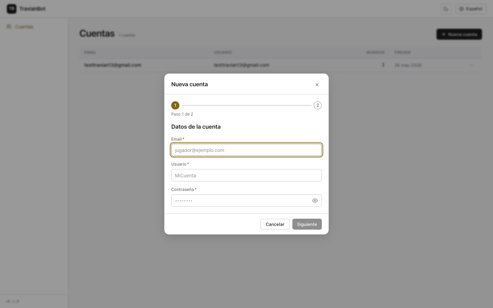
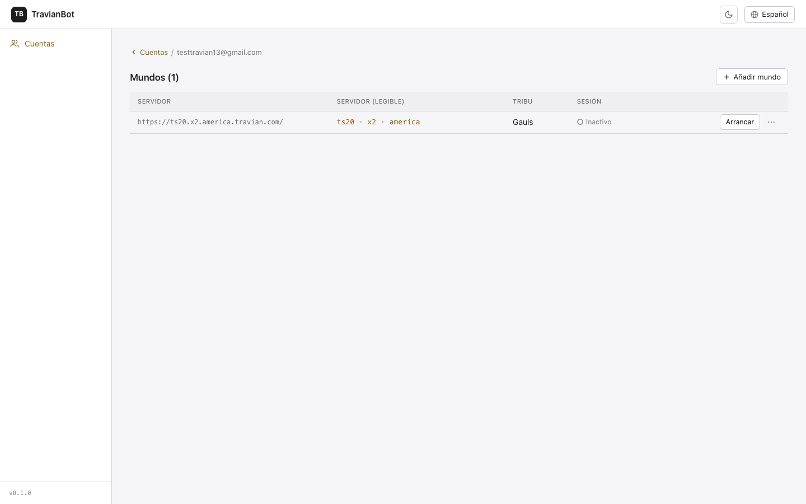
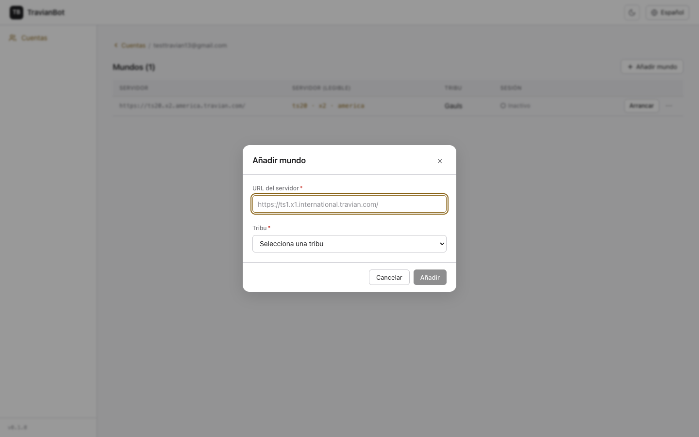
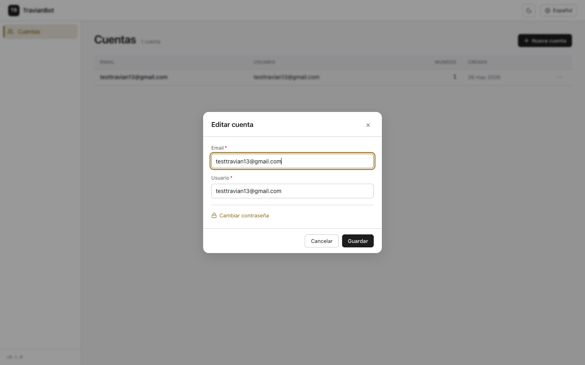
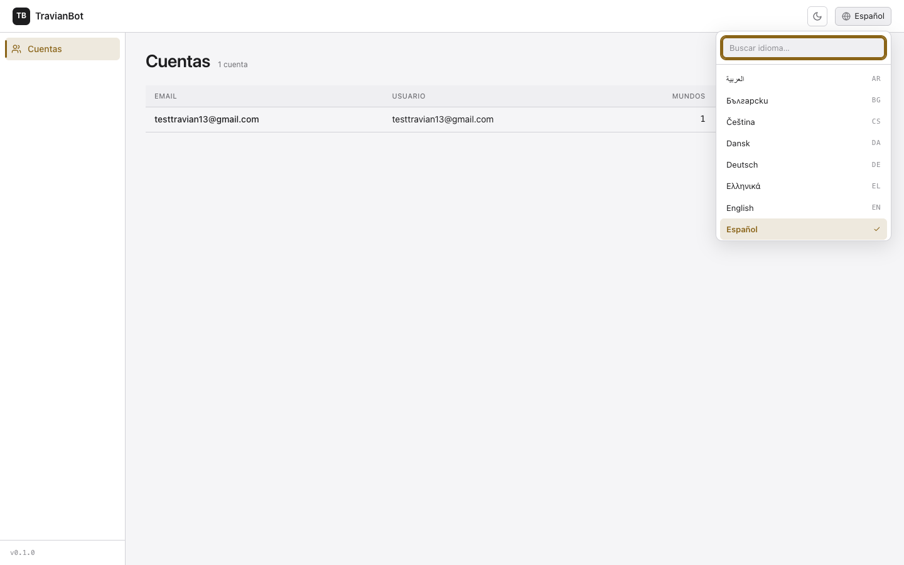

TravianBot · Manual de usuario
Cómo gestionar tus cuentas de Travian y sus mundos desde el panel.
El panel de TravianBot es donde registras tus cuentas de Travian y, dentro de cada una, los mundos (servidores) en los que juegas — cada mundo con su tribu. Desde aquí también arrancas la sesión del bot en un mundo. Una cuenta puede tener varios mundos, cada uno con una raza distinta.
1La pantalla de Cuentas
Es la pantalla de inicio. Muestra todas tus cuentas registradas, con su email, nombre de usuario, número de mundos y fecha de alta.

- Pulsa + Nueva cuenta (arriba a la derecha) para registrar una cuenta.
- Haz clic en cualquier fila para abrir el detalle de esa cuenta y sus mundos.
- El botón ⋯ de cada fila abre el menú con Editar cuenta y Borrar cuenta.
2Crear una cuenta nueva
Al pulsar + Nueva cuenta se abre un asistente de dos pasos.

Paso 1 — Datos de la cuenta:
- Email: el correo de tu cuenta del lobby de Travian (identifica la cuenta; debe ser único).
- Usuario: un nombre visible para reconocerla.
- Contraseña: tu contraseña de Travian. Se guarda cifrada y nunca se vuelve a mostrar. Usa el icono del ojo para ver lo que escribes.
- Pulsa Siguiente para pasar al segundo paso.
Paso 2 — Primer mundo: introduces la URL del servidor y eliges la tribu (los mismos campos que en «Añadir un mundo», más abajo). Al pulsar Crear cuenta se crea la cuenta con su primer mundo.
3Detalle de una cuenta y sus mundos
Al entrar en una cuenta ves sus mundos. De cada mundo se muestra el servidor en formato legible (ts20 · x2 · america), la tribu, la fecha y el estado de la sesión.

- El breadcrumb ‹ Cuentas (arriba) te devuelve a la lista.
- Pulsa + Añadir mundo para registrar otro mundo en esta cuenta.
- El estado de cada mundo puede ser Inactivo, Conectando…, Activo o Error.
- Pulsa Arrancar para iniciar la sesión del bot en ese mundo.
4Añadir un mundo
Desde el detalle de una cuenta, + Añadir mundo abre este formulario.

- URL del servidor: pega la dirección completa del servidor, p. ej.
https://ts1.x1.international.travian.com/. El panel la muestra luego de forma legible (servidor · velocidad · región). - Tribu: elige una de las 7 jugables (Romanos, Teutones, Galos, Egipcios, Hunos, Espartanos, Vikingos).
- Pulsa Añadir. Si ese servidor ya está en la cuenta, te avisa.
5Editar o borrar una cuenta
Desde el menú ⋯ de una cuenta en la lista, elige Editar cuenta.

- Puedes cambiar el Email y el Usuario.
- La contraseña no se muestra por seguridad. Para cambiarla, pulsa el enlace Cambiar contraseña y aparecerá el campo. Si no lo tocas, la contraseña no cambia.
- Pulsa Guardar.
6Idioma y tema
En la barra superior, a la derecha, tienes el selector de idioma y el botón de tema.

- El selector de idioma ofrece los 25 idiomas (con buscador). Los idiomas árabe, hebreo y persa muestran el panel de derecha a izquierda.
- El botón de luna/sol alterna entre tema claro y oscuro. Tu elección se recuerda.